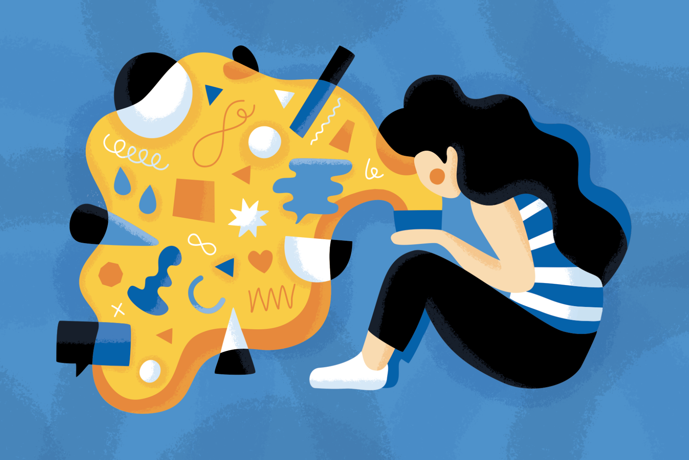
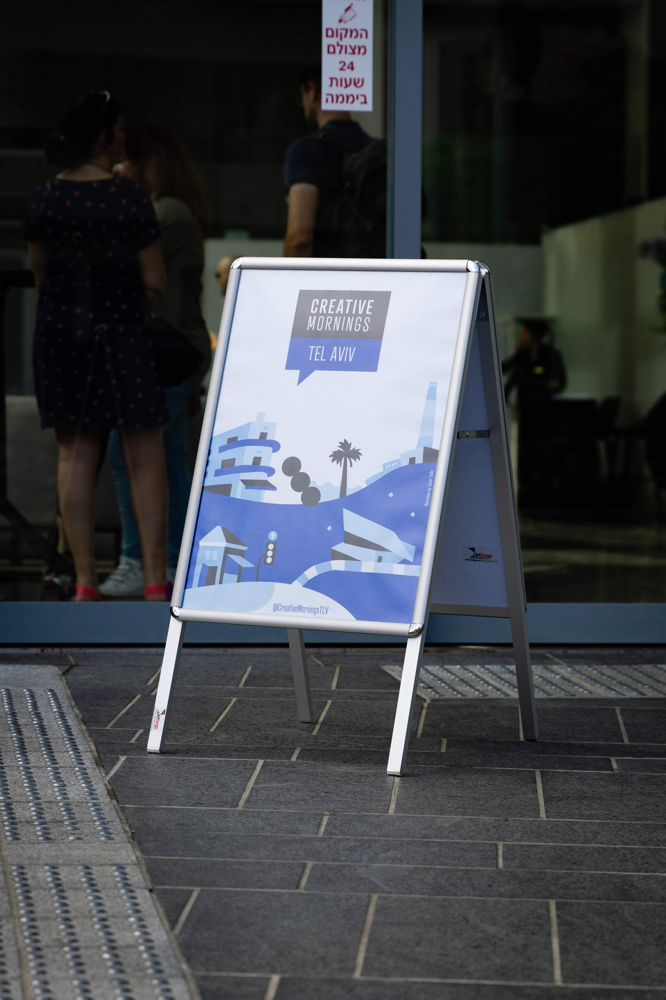
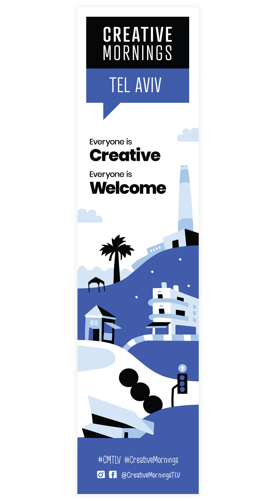

⟵
Tel-Aviv, ongoing
Creative Mornings Postcard
I was approached by the lovely people of Creative Mornings in Tel-Aviv to create a postcard that would be given away on one of the events - the theme was “Curiosity” so I decided to create my own version of pandora and her box.
Event Banners
I was also happy to design their formal event banners:

